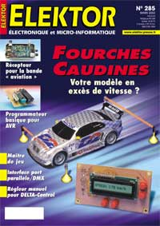

08/03/2002: Programmateur basique pour la (quasi) totalité des µC AVR

ELEKTOR N° 285 de février 2002
Vous trouverez ce programmateur dans le N° 285 d'Elektor, l'auteur du projet est Hans Jürgen Hanft..
Le nombre des composants nécessaires à la réalisation est assez faible et le coût est réduit. Il permet de programmer les µC AVR de la série 89 et 90 dotés d'une interface SPI, et dispose de support de programmation FIN DIL 20 et 40 broches. Vous le connecterez au port série (RS232) de votre PC.
La platine est disponible soit en téléchargement sur le site d'Elektor sous le numéro 010055-1 (http://www.elektor.presse.fr)soit, nous l'espérons, gravée et sérigraphiée (excellente qualité) chez Publitronic. (ou directement : prog_avr.zip)
Le programme (DOS) est également disponible sur le site d'Elektor sous le numéro 010055-11 (ou directement: prog_avr_soft.zip)
Je rappelle que ces logiciels restent la propriété de l'auteur et d'Elektor et que de ce fait, ils ne sont ni freeware ni shareware.
Autres articles originaux:
- Une double barrière lumineuse permettant de mesurer la vitesse des modèles réduits volants ou volants.
- Suite de l'article "cours Microcontrôleurs", 3 eme partie consacrée au BASIC-52. Pas si saugrenue que cela surtout depuis que Intel a mis à la disposition des développeurs le célèbre MSC BASIC-52 . En téléchargement sur le site d'Elektor.
Bonne lecture et bonne soudure.